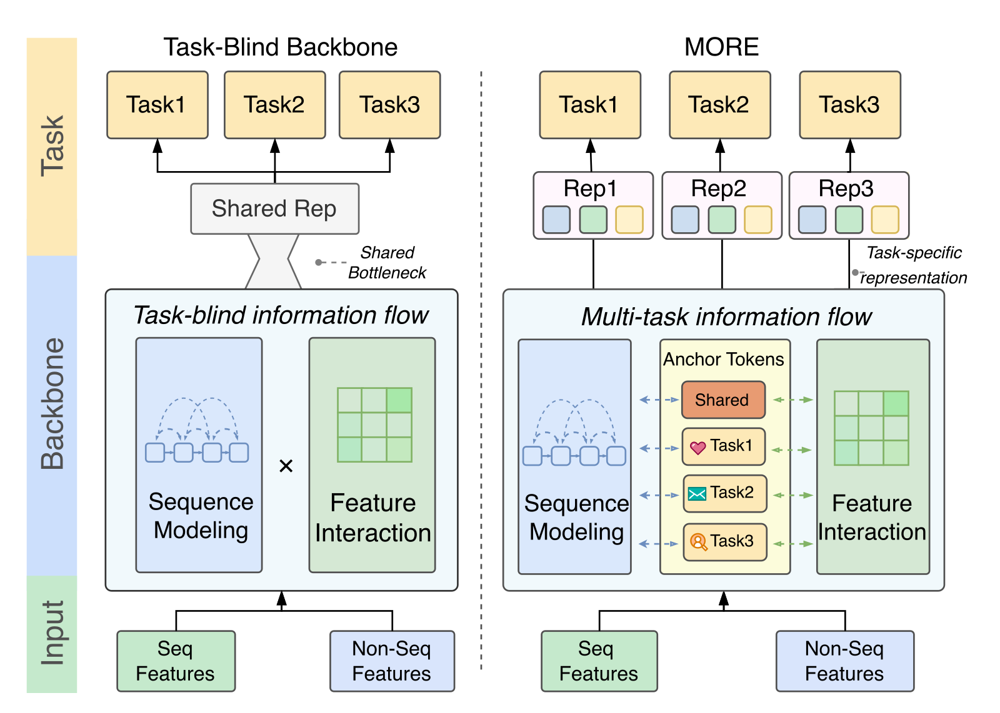
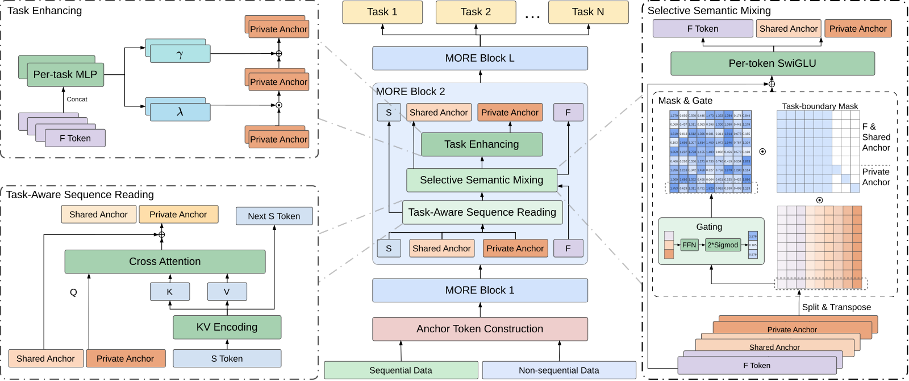
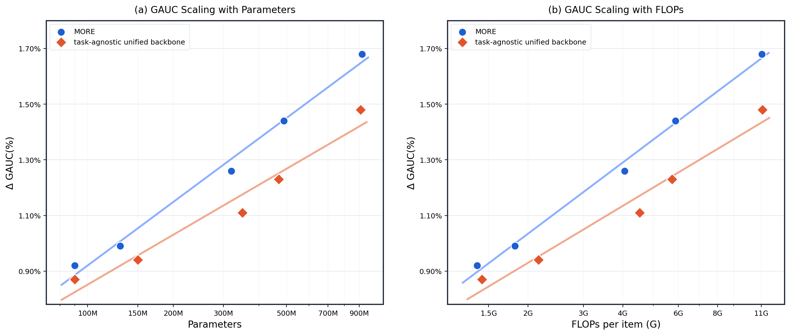

目录 · 11 节
1它到底在解决什么问题？2流程总览：锚点从头走到尾3输入端：行为组合编码和锚点初始化4按任务读序列：每个任务用自己的注意力5有选择的语义混合：掩码挡住任务之间的串味6按任务增强：用特征给私有锚点调幅7部署：按请求共享用户侧计算8实验：七个任务全面领先，但幅度不大9我认为它的局限10一个多任务排序团队可以怎么试11评价做多任务精排的团队值得读这篇，因为它把一个常被默认的设计拿出来重新问了一遍：多个任务到底该在模型的哪一步分开。现在流行的统一骨干把行为序列和其他特征放进同一个可堆叠的模型里，但各任务只在最后的预测塔才分家，前面所有层都在为“所有任务的平均需求”服务。陌陌的 MORE（一种把任务信息放进骨干的排序模型）一句话概括是：在骨干里放一组随层更新的小向量，几个所有任务共用，每个任务再各有一个，让每个任务从第一层起就按自己的需要读历史、混特征。离线七个任务上它都超过三种统一骨干，比如打招呼（Greet）的 GAUC 相对提升 1.58%，OneTrans 是 1.44%；深聊从 0.11% 提到 0.33%。单样本计算量 1.85G，比参考模型的 1.92G 还低，两周线上实验使用时长提升 3.0%。
它到底在解决什么问题？
先看一个示意场景。附近动态信息流里，一个用户过去一周看过 200 条帖子，点开了 40 条，给其中 10 条点了赞，对 3 个发帖人打了招呼，和其中 1 人聊到了五轮以上。现在要给一条新帖子同时预测“会不会点开”“会不会点赞”“会不会打招呼”“会不会深聊”。
| 任务（示意） | 更该看历史里的什么 |
|---|---|
| 点击 | 最近刷到过什么、封面是否抓眼 |
| 评论 | 内容深度、话题是否对胃口 |
| 打招呼 | 对什么样的人感兴趣 |
| 深聊（至少五轮对话） | 过去和什么样的人真的聊下去了 |
同一段历史，四个任务要读的重点不同。统一骨干的做法是先用一套共享的读取方式把历史和特征压成一份表示，再交给每个任务的塔。论文指出三个后果。第一，读序列和做特征交叉时完全不知道在为哪个任务服务。第二，所有任务的偏好在分家之前就被压进同一个表示空间，后面的 MMoE、PLE 这类门控只能对已经压好的几个基向量重新加权，前面没形成的任务专属信息补不回来。第三，加深加宽主要扩大了共享容量，多任务效果随规模涨得慢。
这说明问题不在任务塔不够强，而在信息分家太晚：只要骨干从头到尾不区分任务，再堆参数也主要是在加强共享部分。

流程总览：锚点从头走到尾
MORE 的核心概念是“锚点 token”（Anchor Token），用大白话说，就是几个专门携带任务信息的小向量，它们和特征 token 排在一起穿过每一层，每层都被更新一次，最后交给预测塔。锚点分两种：共享锚点装各任务共通的东西，私有锚点每个任务一个，装这个任务自己的偏好。
| 阶段 | 输入 | 做什么 | 产出 |
|---|---|---|---|
| 输入编码 | 行为序列、用户画像、候选帖子属性、上下文 | 序列每个位置编成一个 token；非序列特征编成 15 个 token | 序列矩阵 S，特征矩阵 F |
| 构造锚点 | S 的平均、F 的全部 | 一个 MLP 生成 8 个共享锚点和 9 个私有锚点，私有锚点再加各自任务的可学习先验向量 | 17 个锚点 |
| MORE 模块（默认 2 层） | S、F、锚点 | 按任务读序列，有掩码地混合特征，按任务增强私有锚点 | 更新后的 S、F、锚点 |
| 预测 | 第 t 个私有锚点、共享锚点、F | 每个任务一个塔 | 各任务的预测概率 |

训练目标是各任务二分类交叉熵的加权和。
输入端：行为组合编码和锚点初始化
为什么需要行为组合编码？如果序列里只记“看过哪条帖子”，不记“对它做了什么”，后面的私有锚点就分不清哪些历史和自己的任务有关。MORE 把每条历史记录上发生过的行为写成一个长度为 T 的 0/1 串，每种组合对应一个编号，再给编号一个向量，和帖子向量、时间位置向量相加，得到这个位置的 token：。
手算一个例子：只看点击、点赞、深聊三种行为，0/1 串有 种。某条帖子被点开并点赞但没聊天，串是 110，对应一个编号；只点开是 100，是另一个编号。所以“点开并点赞”和“只点开”在序列里是两个不同的 token，模型不必自己从多个行为字段里拼出组合。去掉这一步，消融里平均 GAUC 掉 0.08%。
锚点的初始值也从输入算出来，而不是一组固定参数。做法是把序列 token 的平均（256 维）和 15 个特征 token 摊平（15 × 256 = 3840 维）拼在一起，共 4096 维，过一个 MLP 输出 17 × 256 维，切成 8 个共享锚点和 9 个私有锚点。每个私有锚点再加上一个对应任务的可学习向量，让不同任务一开始就有区别。这意味着同一个用户面对不同候选时，锚点的起点已经不同。改成不依赖上下文的初始化，平均掉 0.10%，深聊掉 0.17%。
按任务读序列：每个任务用自己的注意力
为什么要这一步？共享的读取方式只会给历史中的每条记录打一套重要性分数，而点击和深聊看重的记录不同。
每个 MORE 模块先用一个 SwiGLU 层更新序列，再投影成注意力的键和值。然后锚点作为查询去读序列：共享锚点用共享的交叉注意力，每个私有锚点用自己任务独立的一套注意力参数。所以 9 个私有锚点读同一段历史，各自得到不同的加权结果。
模块里还有一个“序列寄存器”：一个 256 维向量，初始为 0，每一层都把本层更新后的序列做池化、过一个 MLP 加进去，再做层归一化。论文文字说这一步在“模块结束时”，紧接着又说锚点“随后”读寄存器，两处顺序对不上；按公式的排列（式 7 在式 8 之前），我理解为本层先更新寄存器，锚点再读更新后的版本，所以第一层读到的也不是全 0。读完序列后，每个锚点各有一个独立的 SwiGLU 门控层，它只读寄存器、不看锚点本身，输出直接加到锚点上。因为每个锚点的门控参数不同，同一个寄存器在不同锚点那里取出的内容也不同。按论文的说法，寄存器的作用是保留跨层的序列信息，因为序列本身每层都在变。
这一步里序列的更新不看候选帖子，只和用户有关，这一点在后面的部署优化里很关键。
消融显示，私有锚点改用共享的注意力参数，平均掉 0.15%；去掉寄存器平均掉 0.05%，主要掉在深聊上（0.13%）。这说明按任务独立读序列比寄存器更重要，后者主要帮到依赖长期信息的深聊。
有选择的语义混合：掩码挡住任务之间的串味
这是全文最关键也最难看懂的一步。读完序列后，锚点还没和非序列特征交流。如果把所有 token 不加区分地混在一起，各个私有锚点会互相稀释，点击的信号会渗进深聊的锚点。
MORE 借用 RankMixer 的 token 混合做法。先把 15 个特征 token、8 个共享锚点、9 个私有锚点排成一个矩阵，共 个 token，每个 256 维。再把 256 维切成 32 段，每段 维。于是第 i 段里装着全部 32 个 token 各自的第 i 段，形状是 32 × 8。
对第 i 段，一个小 MLP 读入这 32 × 8 的内容，给 32 个 token 各打一个分。这个分再和掩码矩阵的第 i 行逐个相乘，得到 32 个权重，掩码是 0 的位置权重就是 0。每个 token 在第 i 段里的 8 维内容乘上自己的权重，权重为 0 的整段变成 0。按我的理解，跨 token 的交流靠的是 RankMixer 式的重排：转回去时，第 i 个位置把这 32 个加权后的 8 维片段首尾拼起来，正好 32 × 8 = 256 维，作为它的新向量。所以掩码第 i 行哪一列是 0，那个 token 的内容就进不了第 i 个位置。论文对这一步的原话只有“转置回去、恢复 token 布局”。
掩码的规则是：特征 token 和共享锚点对所有位置可见，每个私有锚点只对自己可见。手算一下 32 × 32 的掩码里有多少个 1：前 23 列（15 个特征加 8 个共享锚点）全是 1，共 23 × 32 = 736 个；后 9 列每列只有对角线上一个 1，共 9 个；合计 745 个，约占 1024 的 73%。所以每个私有锚点的位置能看到 23 个公共 token 加上自己，看不到另外 8 个私有锚点；特征和共享锚点的位置也看不到任何私有锚点。
混合之后接两层逐 token 的前馈网络，带残差和归一化，然后再按 token 拆回特征、共享锚点和私有锚点。前馈网络只在 token 内部计算，不会把信息带过边界。
这里有一处容易忽略的细节。按公式 (11)，给第 i 段打分的 MLP 读入的是全部 32 个 token 的第 i 段，其中包括所有私有锚点，掩码是在打分之后才乘上去的。按我的理解，私有锚点的内容会影响打分，也就影响别的位置拿到的权重。所以“严格互不可见”在公式上只对被搬运的内容成立。
消融里，去掉掩码平均掉 0.21%，在点赞、评论、打招呼三项的平均上掉 0.34%，是六个部件里最大的。论文的解释是没有掩码时，高频任务（比如点击）的梯度主导共享的混合权重，低频的互动和社交任务被稀释。这说明在混合阶段守住任务边界，比在读取或增强阶段多给每个任务一些参数更重要。
按任务增强：用特征给私有锚点调幅
混合对所有 token 用的是同一套操作，私有锚点作为最后交给任务塔的表示，还需要更多任务专属的信息。这一步借用 FiLM 的思路：每个任务有一个独立的 MLP，读入 15 个特征 token 拼起来的 3840 维向量，输出两个 256 维向量 和 ；私有锚点按 逐维缩放加偏移，再加回原值并归一化。
手算一维：某一维原值 0.5， 为 1.2， 为 -0.1，调制后是 0.5 × 1.2 - 0.1 = 0.5，加回原值得 1.0，再做归一化。如果另一个任务的 是 0.2、 是 0，同一维得到 0.1 + 0.5 = 0.6。这意味着同样的候选特征，可以把两个任务的锚点往不同方向推。去掉这一步平均掉 0.14%。
最后，第 t 个任务的塔读入第 t 个私有锚点、共享锚点和特征 token。论文共训练 13 个任务，私有锚点只有 9 个，按论文说法对应“核心任务”，剩下 4 个任务的塔读什么，论文没说。
部署：按请求共享用户侧计算
一次精排请求通常有几千个候选。逐个候选前向的话，同一个用户的序列编码要重复算几千遍。MORE 的序列这条路只依赖用户，不依赖候选：序列每层的更新、键和值、寄存器都和候选无关，候选之间的差别只体现在特征 token 和锚点上。所以一个请求的候选可以合成一个样本，序列只算一次再广播给所有候选；推理时候选分成小批，每个小批内共享用户侧计算。
线上 P99 打分延迟比逐候选部署降低约 30%，模型结构不用改。
实验：七个任务全面领先，但幅度不大
数据来自陌陌“附近动态”的线上日志，90 天训练，紧接着的一天评估，指标是 GAUC。模型默认 2 层、256 维。下表列出部分基线，数字是相对 Transformer+RankMixer 的 GAUC 相对变化。
| 方法 | 点击 | 点赞 | 评论 | 打招呼 | 深聊 | 参数量 | 单样本计算量 |
|---|---|---|---|---|---|---|---|
| Transformer+RankMixer（参考） | 0.7863 | 0.6892 | 0.6979 | 0.7279 | 0.8444 | 77.85M | 1.92G |
| STCA | +0.13% | +0.66% | +0.38% | -0.01% | -0.07% | 88.21M | 2.36G |
| MixFormer | +0.29% | +1.13% | +0.89% | +1.25% | +0.15% | 98.68M | 4.65G |
| HyFormer | +0.43% | +0.89% | +1.09% | +1.32% | +0.08% | 153M | 2.16G |
| OneTrans | +0.38% | +1.15% | +0.80% | +1.44% | +0.11% | 108.65M | 1.73G |
| MORE | +0.44% | +1.47% | +1.26% | +1.58% | +0.33% | 132M | 1.85G |
三种统一骨干在各任务上的提升形状很像，因为它们都只在塔里区分任务。MORE 在点赞、打招呼和深聊上拉开得最多，点击只比 HyFormer 多 0.01 个百分点。这说明任务感知主要帮的是低频的互动和社交任务，高频的点击本来就主导了共享表示，收益很小。
消融把六个部件全部去掉，退回只有多个任务塔的统一骨干，平均掉 0.33%。单独去掉各部件的损失加起来是 0.73%，大于 0.33%（我按表格算的），所以这些部件的作用有重叠，不能简单相加。

规模实验把参数从约 0.1B 扩到约 0.9B，对照是按 HyFormer 设计、不带任务感知部件的统一骨干。从图上读，最小规模时两者差约 0.05 个百分点，约 0.9B 时 MORE 约 1.68%，对照约 1.48%，差距扩大到约 0.2 个百分点（我从图上读的）。这说明任务感知的收益随规模变大，不是小模型上的偶然。
线上在附近动态做了两周 A/B，对照是线上的 DLRM 式精排模型，六项指标全部显著为正（p < 0.05）：
| 指标 | 相对提升 |
|---|---|
| 使用时长 | +3.0% |
| 点击 | +2.8% |
| 点赞 | +2.0% |
| 评论 | +3.6% |
| 打招呼 | +2.5% |
| 深聊 | +2.0% |
这说明在真实流量上，它的收益同时覆盖浏览、互动和社交三个层次，而且已经全量上线。
我认为它的局限
第一，线上收益不能全算在任务感知上。线上对照是 DLRM 式的老模型，不是统一骨干。从规模图看，同等规模下不带任务感知的统一骨干也能拿到大部分离线提升，默认规模附近两者只差约 0.05 到 0.1 个百分点（我从图上读的）。所以 3.0% 的时长提升里，有多少来自换成统一骨干，有多少来自锚点，实验里没有分开测。
第二，离线差距小，且没有波动范围。点击只比 HyFormer 高 0.01 个百分点，MORE 的参数量 132M 比 OneTrans 的 108.65M 多约 21%（我按表格算的）。表里没有多次训练的方差，离线的小差距是否稳定无从判断。
第三，任务数量和结构绑在一起。混合层要求 256 维能被 token 总数整除，现在是 32 个 token、每段 8 维。按我的理解，加一个任务就会多一个私有锚点，token 总数和每段维度都要跟着变，不能热插拔。论文也把动态任务配置列为未来工作。另外全文只有一个场景、一份私有数据集，13 个训练任务里只报告了 7 个。
一个多任务排序团队可以怎么试
- 先确认问题存在：在现有统一骨干上看各任务的离线指标，如果低频任务（关注、深度互动）明显跟不上点击，说明共享表示可能偏向高频任务。
- 最小改动先上掩码混合：保留现有骨干，加入共享锚点和每任务一个私有锚点，只在 token 混合层加任务边界掩码。消融显示这是收益最大的单个部件。
- 再加按任务的序列注意力，观察低频任务的提升是否继续扩大，同时记录计算量的增加。
- 再做按请求共享：先确认序列这条路完全不依赖候选，再把同一请求的候选合并成一个样本，对比 P99 延迟。
- 做两组线上对照：一组对照老模型，一组对照不带锚点的统一骨干，才能把“换骨干”和“任务感知”的收益分开。
评价
| 维度 | 评价 |
|---|---|
| 问题重要性 | 高。多任务精排几乎是工业标配，任务该在哪一层分开是个实际问题 |
| 方法创新性 | 中。各部件分别来自 RankMixer、FiLM、HSTU 的已有做法，新意在于用锚点把它们串成贯穿骨干的任务通道 |
| 实验证据 | 中。离线全面领先、消融清楚、有线上全量；但单一场景、无方差、线上对照不是统一骨干 |
| 工程成本 | 中。计算量与现有统一骨干相当，掩码和锚点实现不复杂，按请求共享需要改样本组织 |
| 是否值得尝试 | 值得。已有统一骨干且低频任务吃亏的团队，可以先只加掩码混合做一次低成本验证 |
读完这篇，你觉得
夜读鸮记下了，谢谢你的反馈。
点一下即可，无需登录；再点一次撤回。只统计匿名次数，不记录你是谁。
讨论
欢迎补充实验细节、复现经验或不同看法。需 GitHub 登录。
正在加载讨论…